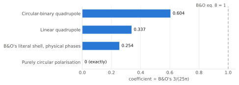
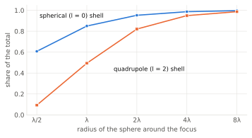
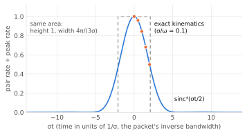
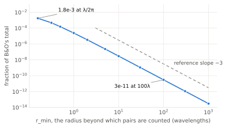

An independent check of D. Blas and J. A. Oller, “Gravitational waves decay in vacuum,” arXiv:2607.24930 (version 2)
The check was run by AI agents (Anthropic’s Claude models), directed from the Science repository. Several independent analyses attacked the paper from different directions, adversarial referees challenged each one, and a final critic re-ran the scripts. Every number below was printed by a script whose output log is kept beside it. No physicist has reviewed it yet. Read it as a careful draft of a referee report, not as a published result. Where it is uncertain, it says so.
Blas and Oller (“B&O” below) model a gravitational-wave front as a coherent state of N gravitons of frequency ω and bandwidth σ. Their abstract opens: “We show that gravitational waves (GW), treated as coherent graviton states, decay into photon pairs in vacuum. The process, even if suppressed by G², is lifted by two effects combined: the expected factor of the graviton number squared, N², and the coherence of the state.”
The ingredients are the tree-level amplitudes for two gravitons going to two photons (their eq. 6), with magnitudes 8πG t²/s and 8πG u²/s in terms of the Mandelstam variables, summed coherently over the wave’s graviton modes (eq. 7). The result is a pair-production rate (eq. 8), in natural units (ħ = c = 1):
From it they derive a reaction time τ, the time to the first photon, and a depletion time for the wave (eqs. 9–12); a photon luminosity for compact binaries (their Fig. 2); a rate per volume for a stochastic background, 8πG²ρGW²/15 (eq. 14); an enhancement by CMB photons already present, a factor 1 + 2f with f the CMB occupation number; a cosmological integration over the history of all mergers (eq. 19 and supplement eq. S12); and the analogous decay into ultralight dark-matter scalars (eqs. 16–18).
Four analyses, each with its own scripts:
Adversarial referees then tried to break each analysis, and a critic re-ran the scripts and checked the report against the logs. We quoted B&O only from their own text, extracted from the PDF.
Inside B&O’s idealised model, the following are right:
The problems are not arithmetic. They are about whether the quantity computed is the one that describes a real gravitational wave.
Scattering amplitudes are complex numbers, and for g g → γγ their phases depend on the directions of the outgoing photons. B&O’s eq. 6 lists magnitudes whose labels are spin projections on a common axis rather than physical helicities. That is fine for the magnitudes, but B&O’s eq. 7 then adds the amplitudes as real positive numbers. A combination of them that doesn’t depend on phase conventions has phases of +63.9°, −17.1° and −125.8°, so no choice of convention makes them all real at once.
Keeping the phases matters. Two angular-momentum channels (Jz = +4 and −4) cannot interfere once you integrate over the photons’ azimuth, because their cross term goes as cos 8φ and averages to zero. B&O’s rule keeps that cross term as a constant. As a result:
B&O’s “unpolarised isotropic” wave has no unique physical realisation (a smooth polarisation pattern cannot be combed flat over a sphere, the hairy-ball theorem). So we evaluated several real patterns:

Eq. 8 therefore overestimates by 1.7× to 4×, depending on the pattern. A smaller, separate inconsistency: eq. 5 gives the wave a Gaussian profile, but eqs. 7 and S6 are evaluated with a top hat. At equal N and σ the Gaussian gives a 4π times larger peak rate and a 3.76 times larger total, so the 3/(25π) belongs to the top hat specifically.
B&O compute an S-matrix probability with the initial state |f⟩ = Ssource|0⟩: the coherent state that the source would create, used as the incoming state of free fields. A free field that agrees with the source’s outgoing radiation at late times must, at early times, have been an incoming spherical wave. That is the Pauli–Jordan (retarded minus advanced) solution. In the calculation the wave converges onto the source’s position, focuses there at t = 0, and re-expands. Numerically, the field is 100% incoming at early times (tω = −30) and 50% incoming at the focus. A real source’s retarded field is never incoming.
That focus is where B&O’s probability comes from:

Why the focus matters: collinear gravitons can’t fuse. Two massless particles moving in the same direction have zero invariant mass, s = 0, and a pair of photons needs s > 0. Far from its source a wave is locally almost a plane wave, all its gravitons nearly parallel, so s ≈ 4ω/r is tiny and fusion shuts off. At the focus, gravitons arrive from every direction, s is large, and fusion is easy. It is the same kinematics that stops a single photon from turning into an electron–positron pair in empty space.
To be fair to B&O: they note that far from the source the field tends to the outgoing packet, which is true at late times. They also use the Feynman propagator correctly for the internal graviton. The problem is the external state: the S-matrix integrates over all times, including the fictitious incoming half of the wave.
B&O turn the energy-conserving delta function into a time by the textbook replacement 2πδ(0) → T. Kept exactly instead, it gives a finite total for the whole packet,
produced with a time profile R(t) = R(0) sinc⁴(σt/2), where R(0) is exactly B&O’s eq. 8. So eq. 8 is the peak rate, sustained for an effective time 4π/(3σ).

As an average over the packet, B&O’s idealisation is legitimate. What breaks is using it as a constant rate over times much longer than 1/σ. Eq. 9 exceeds the total for t > 4π/(3σ), and in B&O’s own model the fraction of a packet that is ever converted is (4π/3)/(στh). For their own example (E = M⊙c², ε = 0.15, ω = 10⁴ eV) that fraction is 2.4×10⁻³⁶. That is not depletion.
To model a physical wave, we kept only the outgoing half of B&O’s packet, switched on beyond a radius rmin, and computed the pairs it produces with the full in-in (expectation-value) formalism:

The rate while the shell passes radius r falls as r⁻⁴, and a quadrupole wave with its near-field terms behaves the same way. This is a formation-length effect, and it undoes the claims that rely on a sustained decay:
E = 2 M⊙c² radiated at 150 Hz over 5 ms (SI units):
| Quantity | Value |
|---|---|
| B&O eq. 8 rate, applied to the merger | 1.40×10⁻⁴ pairs/s |
| B&O reaction time τ (eq. 10) | 3.58×10³ s (720,000 times the merger’s duration) |
| B&O rate × 5 ms | 7.0×10⁻⁷ pairs |
| Outgoing wave, pairs made beyond λ/2π (318 km) | 1.9×10⁻⁹ pairs (1.4 with the CMB enhancement) |
| Outgoing wave, beyond one wavelength (2,000 km) | 2.6×10⁻¹¹ pairs (0.02 with the CMB enhancement) |
| Outgoing wave, beyond ten wavelengths | 3.2×10⁻¹⁴ pairs |
| Near zone: quadrupole wave with its 1/r² and 1/r³ terms, beyond λ/2π | 2.1–4.9×10⁻⁷ pairs, i.e. 0.30–0.70 of B&O |
The last row is why we don’t claim B&O’s merger numbers are hugely too large: close to the source the numbers are comparable. But λ/2π = 318 km is about the binary’s own separation (339 km), inside the source, which none of these models describe. B&O’s validity condition τ ≪ 1/σ also fails in vacuum and holds only with the CMB enhancement, where τ = 4.7 μs and their “sphere of radius τ” has a radius of 1.4 km, again deep inside the source.
“Right arithmetic, wrong quantity” means the calculation is correct but does not describe a gravitational wave travelling away from a real source.
| B&O claim | Verdict | Key number |
|---|---|---|
| Eq. 6 amplitude magnitudes and zero pattern | Confirmed | as spin projections on a common axis; agree to 10⁻¹⁰ |
| Eq. 6 amplitudes usable as real positive numbers (as eq. 7 needs) | Refuted | invariant phases +63.9°, −17.1°, −125.8° |
| Eq. 8 coefficient 3/(25π), within the model | Confirmed | exact (sympy); numerical ratio 1.000000000000 |
| Eq. 8 for physical coherent waves | Right arithmetic, wrong quantity | 0.25–0.60 × eq. 8; 0 if circular |
| Coefficient set by N, ω, σ alone | Refuted | depends on profile (4π) and polarisation |
| 2πδ(0) → T | Confirmed as an average | eq. 8 is the peak; Teff = 4π/(3σ) |
| Field “tends asymptotically to the outgoing” packet | Right arithmetic, wrong quantity | true late; the in-state is incoming early |
| Where the eq. 8 probability is generated | At the focus | 85% within 1λ (spherical shell) |
| Sustained decay, depletion, “sphere of radius τ” | Refuted | yield beyond r ∝ r⁻³ |
| Photon luminosity of binaries (Fig. 2) | Right arithmetic, wrong quantity | near-source comparison undetermined |
| Binning gives a lower bound | Refuted | it overestimates; size contested |
| Eq. 19/S12: each merger radiates for the whole propagation time | Refuted | overcount 3σ/(4πH), e.g. 1.7×10²¹ |
| ħ counting (eqs. 11–12) and the N² enhancement | Confirmed | N² is classical phase coherence |
| Eq. 14, stochastic background 8πG²ρ²/15 | Confirmed | exact for any isotropic spectrum |
| CMB factor 1 + 2f “in the average sense” | Confirmed as an approximation | exact average 5–8% higher |
| Dark-matter scalar coefficients 7/(450π) and 1/16, within the model | Confirmed | physical states 0.20–0.47 of it |
| Eq. 18, scalar power ~10¹⁴ W | Arithmetic right, applicability doubtful | 3.8×10¹³ W; resonant band ~10⁻⁶ of the merger’s |
The full 29-row table, with the script behind every number, is section 3 of report.md in the check folder.
You’ll know better than we do. Some options:
Everything is in checks/2026-10-11-blas-oller-gw-decay/: report.md (the full report, quoting B&O verbatim), calc/ (about 35 Python scripts) and notes/ (their output logs). The scripts need numpy, scipy, sympy and mpmath. Some import the repository’s qft_second_order.py and qft_production.py, and every module output the conclusions rest on is cross-checked by an independent route. Run them from the check folder, for example python3 calc/taskC1_exact_Ptot.py. A few take several minutes. The figures here are drawn by summary/make_figures.py from the logged numbers.